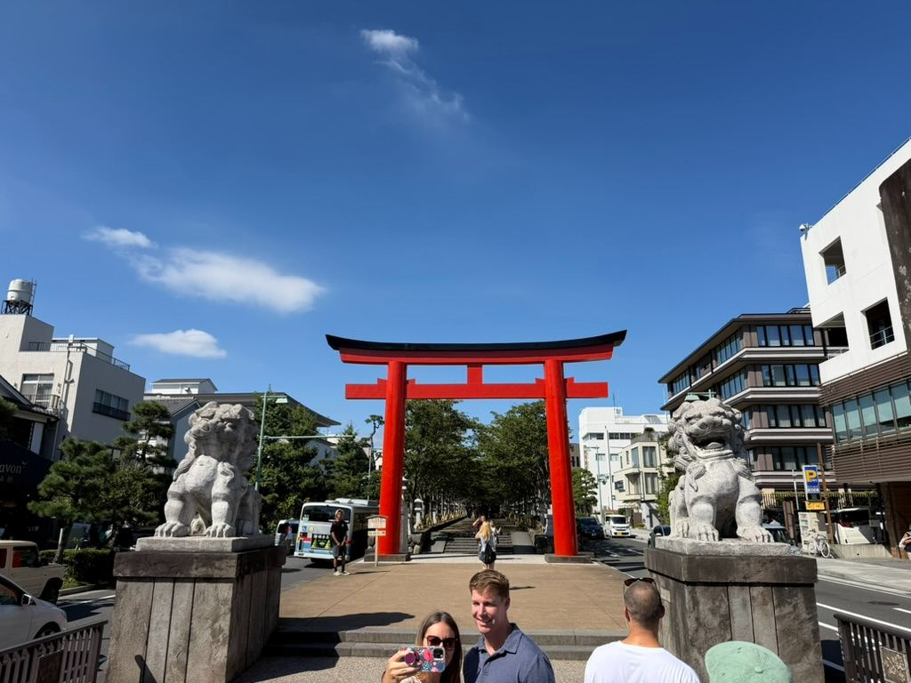
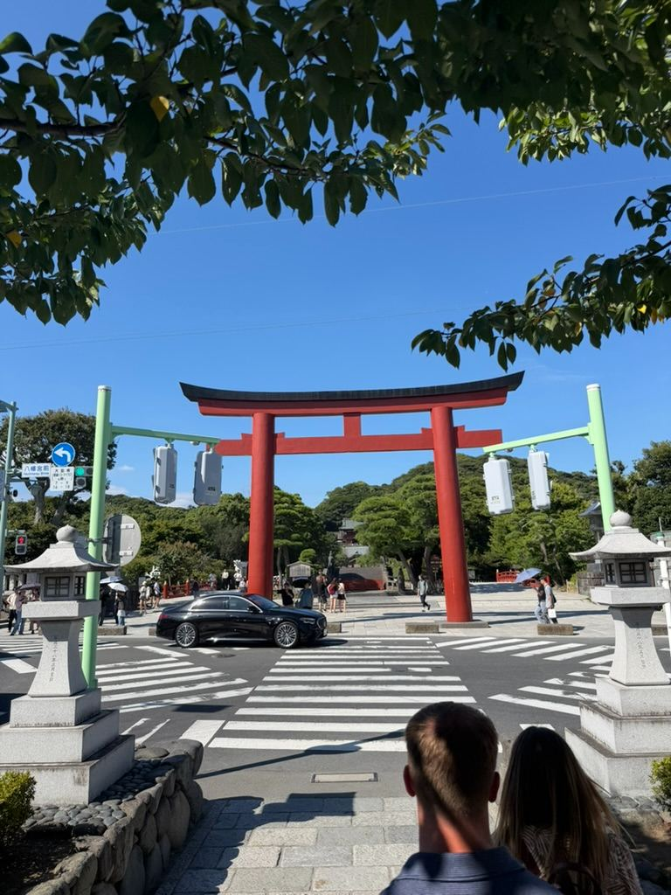
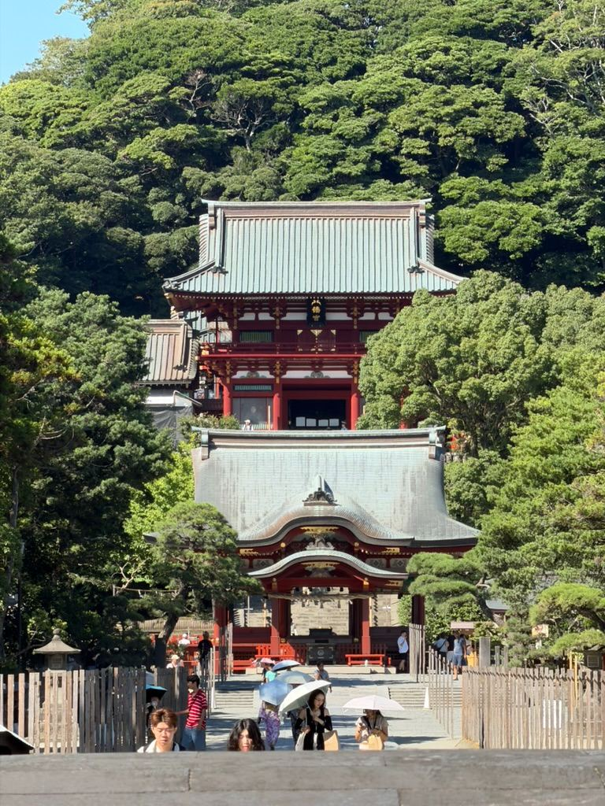

Exploring Kamakura: The Ultimate Easy Day Trip from Tokyo ⛩️🌊





Watch on YouTube →
If you’re looking to escape the neon-lit hustle of Tokyo for a day, Kamakura is the perfect breath of fresh air. Tucked between lush green hills and the ocean, this ancient coastal town is packed with rich history, stunning shrines, and fantastic street food—all just an hour away by train.
Here’s a quick recap of our recent trip to Kamakura and the top spots you shouldn't miss!
1. Komachi Street (小町通り)
As soon as you step off the train, Komachi Street welcomes you with a bustling pedestrian avenue lined with charming shops, local craft stores, and incredible street eats. From matcha ice cream and fresh dango to savory snacks, it’s the best place to kick off your day with some energy and a bit of shopping.
2. Tsurugaoka Hachimangu Shrine (鶴岡八幡宮)
Walking straight through the grand red torii gate leads you down a beautiful tree-lined approach directly to Tsurugaoka Hachimangu, Kamakura’s most important Shinto shrine.
The Lotus Ponds: As you stroll through the grounds, you’ll cross scenic bridges over expansive ponds filled with vibrant, giant lotus leaves.
The Flag-Lined Paths: Wandering deeper into the shrine grounds, you'll find paths lined with white donation flags (Nobori) creating a captivating contrast against the greenery.
The Main Shrine: Climbing the grand stone steps brings you up to the main hall, offering an impressive view back over the entire shrine complex and the long avenue stretching through the town.
Travel Tips for Your Visit
Getting There: Take the JR Shonan-Shinjuku Line or JR Yokosuka Line straight from Tokyo or Shinjuku Station to Kamakura Station. It takes about 50–60 minutes!
Best Time to Go: Start early in the morning to enjoy Komachi Street before the largest crowds arrive, and wear comfortable walking shoes—you’ll be covering plenty of ground!
Have you ever visited Kamakura, or is it on your Japan travel bucket list? Let us know in the comments below!